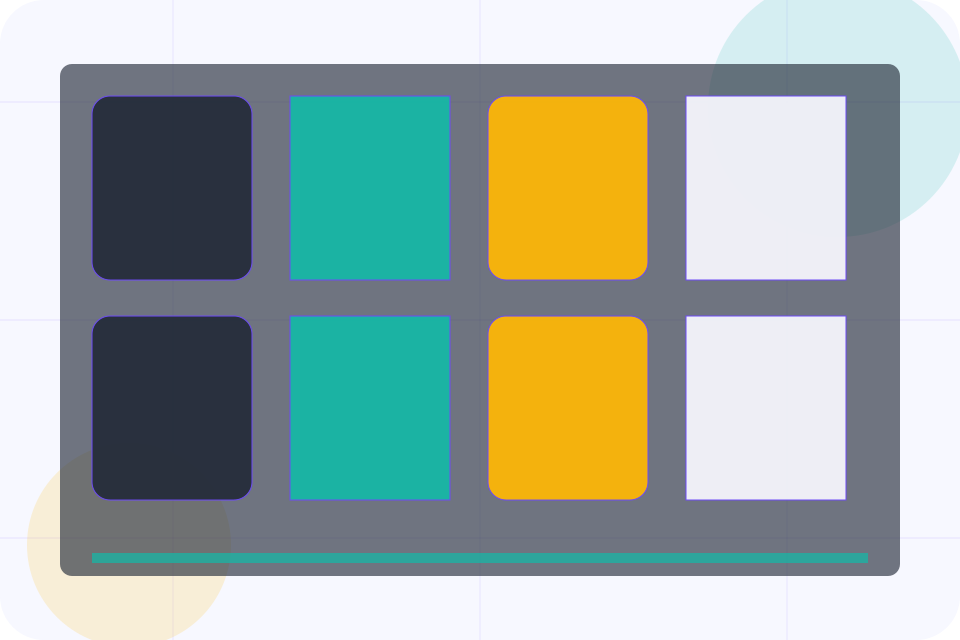
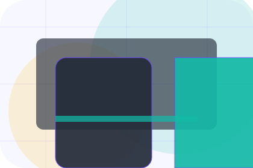
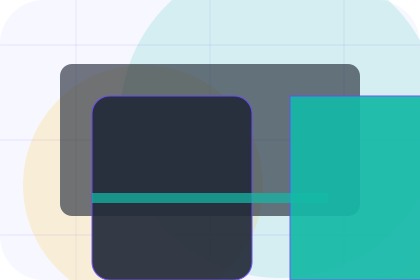
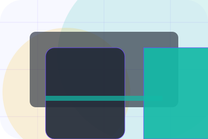

Weddings / 01
Weddings by Vow
Weddings shaped for events, weddings & experience production decisions.
Weddings opens as a clear events decision hub: what Vow offers, who it helps, why it matters, and which route to take first.
The first screen combines positioning, proof, primary action, and fast internal navigation, so people can act immediately or compare the rest of the weddings route with context.
Check availabilityPlan the visitReserve with context
Event card hero
Plan the date
Select the closest route and Vow keeps the next step, proof, and follow-up expectation aligned with emotion and confidence.

Weddings / 02
Dream inside weddings
Dream adds hospitality context to the weddings route, using the clean event calendar system structure to support emotion and confidence before visitors choose a next step.
Vow uses rsvp event cards and focused copy to make the decision easier to scan, aligning the section with emotion and confidence rather than filling space.
Explore WeddingsVow structures dream around context, judgment, and a clear next route so visitors can compare the block quickly before they enquire about a date.
Enquire DateWeddings / 03
Ceremony inside weddings
Ceremony adds hospitality context to the weddings route, using the clean event calendar system structure to support emotion and confidence before visitors choose a next step.
Vow uses rsvp event cards and focused copy to make the decision easier to scan, aligning the section with emotion and confidence rather than filling space.
Explore Weddings
Context
Ceremony gives the page a specific angle instead of repeating the navigation label.
Judgment
The rsvp event cards show what to compare, what to avoid, and what matters most for events, weddings & experience production visitors.

Direction
The final cue points to a useful internal route so the section keeps the journey moving.
Weddings / 04
Reception inside weddings
Reception adds hospitality context to the weddings route, using the clean event calendar system structure to support emotion and confidence before visitors choose a next step.
Vow uses rsvp event cards and focused copy to make the decision easier to scan, aligning the section with emotion and confidence rather than filling space.
Explore WeddingsContext
Reception gives the page a specific angle instead of repeating the navigation label.
Weddings / 05
Styling inside weddings
Styling adds hospitality context to the weddings route, using the clean event calendar system structure to support emotion and confidence before visitors choose a next step.
Vow uses rsvp event cards and focused copy to make the decision easier to scan, aligning the section with emotion and confidence rather than filling space.
Explore WeddingsContext
Styling gives the page a specific angle instead of repeating the navigation label.
Judgment
The rsvp event cards show what to compare, what to avoid, and what matters most for events, weddings & experience production visitors.
Direction
The final cue points to a useful internal route so the section keeps the journey moving.
Weddings / 06
How the timeline works
Timeline explains the operating sequence so visitors can see how the first request becomes a clear recommendation and follow-up.
The steps are written from the visitor side: what they do first, what Vow clarifies, what they receive, and how support continues.
Explore Weddings- 01
Start
How visitors begin this route and what detail is useful at the first step.
- 02
Clarify
What Vow reviews, filters, or explains before recommending the next move.
- 03
Continue
What the visitor receives afterward, including support, proof, or a handoff to the next page.
Weddings / 07
Suppliers inside weddings
Suppliers adds hospitality context to the weddings route, using the clean event calendar system structure to support emotion and confidence before visitors choose a next step.
Vow uses rsvp event cards and focused copy to make the decision easier to scan, aligning the section with emotion and confidence rather than filling space.
Explore WeddingsContext
Suppliers gives the page a specific angle instead of repeating the navigation label.
Judgment
The rsvp event cards show what to compare, what to avoid, and what matters most for events, weddings & experience production visitors.
Direction
The final cue points to a useful internal route so the section keeps the journey moving.
Weddings / 08
Compare scope and terms
Packages makes commercial comparison easier by showing fit, scope, and terms before events visitors ask for the next step.
The layout keeps price-sensitive decisions honest: it separates starting scope, fuller delivery, and ongoing support so the visitor can ask a sharper question.
View Pricing
Fit
Who the offer is for, which scope it suits, and when a different route may be better.
Scope
What is included clearly enough for events, weddings & experience production visitors to compare value without hidden jargon.
Terms
The practical details that should be confirmed before someone asks to enquire about a date.
Entry
Who the offer is for, which scope it suits, and when a different route may be better.
ScopedStay
What is included clearly enough for events, weddings & experience production visitors to compare value without hidden jargon.
QuotedPrivate
The practical details that should be confirmed before someone asks to enquire about a date.
RetainerWeddings / 09
Proof visitors can see
Proof shows what changes after the work: clearer decisions, visible progress, and proof points that connect the offer to real outcomes.
The layout connects before-and-after thinking with measured outcomes, making the result easy to scan without promising what the business cannot guarantee.
Explore WeddingsThe uncertainty, delay, or missed opportunity visitors bring into proof.
The clearer, safer, or more valuable state Vow is designed to support.
The visible cue that connects proof to a believable decision, not a loose claim.
Weddings / 10
Enquire Date
Vow closes the weddings route with a clear action, a quick reminder of the value, and a low-friction way to enquire about a date.
Visitors who are ready can use the primary action. Visitors who are still comparing can scan the section links, proof, and support routes before they enquire about a date.
Enquire DateThe final block keeps the choice simple: act now, compare one more proof route, or send enough detail for a focused response.
Enquire Dateemotion and confidence
Enquire Date
An events site with elegant event cards, date filters, host proof, and RSVP-style enquiry. Weddings ends with a direct path to enquire about a date, plus enough context for visitors who still need to compare.
Important notes before you act
Availability, supplier pricing, venue access, and weather plans must be confirmed before contract.